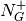

2.3. SimpleMorphoMath1D¶
This module implements Morphological 1D Operators.
- class SimpleMorphoMath.SimpleMorphoMath1D.BallStructuringElement(radius)[source]¶
Bases: SimpleMorphoMath.SimpleMorphoMath1D.StructuringElement
This class implements a ball structuring element.
The domain of the structuring element is [-radius, radius].
- class SimpleMorphoMath.SimpleMorphoMath1D.Domain(inf, sup)[source]¶
Bases: object
This class implements a functional 1D domain defined by the range [inf, sup].
The size of the domain defined by sup - inf +1 is given by the function len().
To test if x is in the domain, use:
x in domain
- class SimpleMorphoMath.SimpleMorphoMath1D.Function(values)[source]¶
Bases: object
This class implements a 1D function.
The parameters values is an iterable that define the initial values of the function.
The function domain is set to [0, len(values) -1].
- _pointwise_rank(other, rank_operator)[source]¶
This method implements a point-wise rank filter.
The function is modified in-place.
- _rank_filter(structuring_element, rank_operator)[source]¶
This method implements a rank filter.
The function is modified in-place.
- _rank_filter_vhgw(radius, rank_operator)[source]¶
This method implements a rank filter using the Van Herk & Gill-Werman algorithm.
This algorithm comes from C. Clienti, M. Bilodeau, and S. Beucher, An Efficient Hardware Architecture without Line Memories for Morphological Image Processing. In Proceedings of ACIVS. 2008, 147-156.
- filet = <SimpleMorphoMath.PrettyPrinting.Filet object at 0x4431c50>¶
- plot(plot_type='umbra', mask=None, umbra_character=None, filet=None)[source]¶
Pretty print a function.
The parameter plot_type defines the type of plot:
- curve
- umbra
- dual
The parameter mask set a mask function to display suppressed and added levels.
The attribute black_pattern defines the character for a level on, minus_pattern for a suppressed level and plus_pattern for an added level, respectively.
- translate(offset, padd_inf=True)[source]¶
Translate the function.
If the parameter padd_inf is set to True then the padding value is set to zero else to the sup of the function.
- umbra_character = <SimpleMorphoMath.PrettyPrinting.UmbraCharacter object at 0x4431e10>¶
- unit_ball = <SimpleMorphoMath.SimpleMorphoMath1D.BallStructuringElement object at 0x45cb3d0>¶
- class SimpleMorphoMath.SimpleMorphoMath1D.StructuringElement(offsets)[source]¶
Bases: object
This class implements a structuring element.
The parameter offsets is an iterable that contains the offsets of the pixels on of the structuring element.
The neighbor set  and
 is defined in the article: Morphological
Grayscale Reconstruction in Image Analysis: Applications and Efficient Algorithms, Luc Vincent,
IEEE Transactions on image processing, Vol. 2, No. 2, April 1993.
is defined in the article: Morphological
Grayscale Reconstruction in Image Analysis: Applications and Efficient Algorithms, Luc Vincent,
IEEE Transactions on image processing, Vol. 2, No. 2, April 1993.
- class SimpleMorphoMath.SimpleMorphoMath1D.StructuringElementIterator(structuring_element, domain)[source]¶
Bases: object
This class implements a structuring element iterator.
The parameter structuring_element defines the structuring element and the parameter domain defines the domain of the lattice.
- SimpleMorphoMath.SimpleMorphoMath1D.unit_ball = <SimpleMorphoMath.SimpleMorphoMath1D.BallStructuringElement object at 0x45cb5d0>¶
Unit ball structuring element.